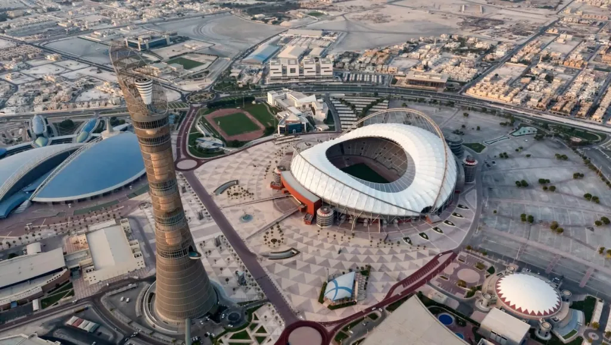
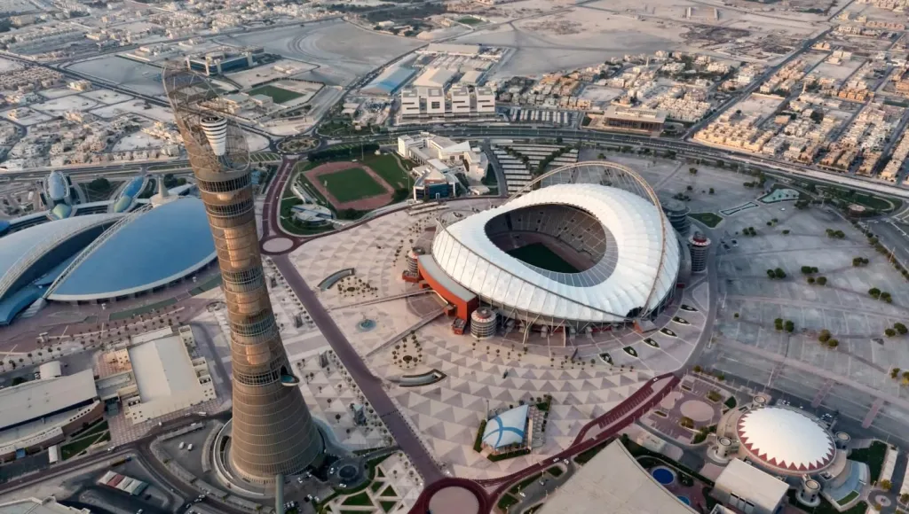

Estádio 974

Estádio Al Thumama

Estádio Khalifa International

Estádio Ahmad bin Ali

Estádio Al Bayt

Estádio Lusail

Estádio Education City

Estádio Al Janoub

Estádio 974

Os uniformes da Seleção na Copa foram lançados com a campanha “Garra Brasileira” e foram inspirados na onça-pintada. A camisa principal do Brasil, com marcas d’água que fazem alusão ao animal selvagem, traz o tradicional modelo canarinho, na cor amarela, mas desta vez um pouco mais clara. A gola tem o colarinho verde com bordas azuis e tem abertura com botão e a bandeira do Brasil. A camisa reserva do Brasil é azul e tem detalhes da onça nas mangas em um degradê para o verde.
1. Alisson
23. Ederson
12. Weverton
13. Daniel Alves
2. Danilo
6. Alex Sandro
16. Alex Telles
14. Éder Militão
4. Marquinhos
3. Thiago Silva
24. Bremer
17. Bruno Guimarães
8. Fred
5. Casemiro
22. Everton Ribeiro
15. Fabinho
7. Lucas Paquetá
10. Neymar JR.
9. Richarlison
19. Antony
18. Gabriel Jesus
26. Martinelli
25. Pedro
11. Raphinha
21. Rodrygo
20. Vini Júnior